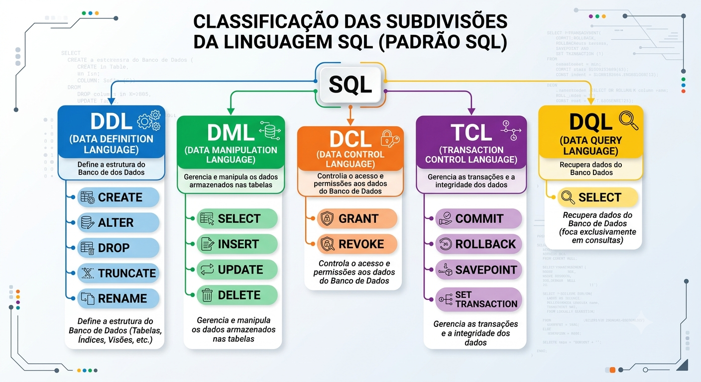

Curso: Banco de Dados Relacionais aplicado à Administração Tributária Público-alvo: Profissionais da Secretaria de Estado da Fazenda da Paraíba (SEFAZ-PB) SGBD utilizado: Microsoft SQL Server (T-SQL) — ferramenta: SQL Server Management Studio (SSMS) Carga horária sugerida: 4 horas (2h teoria + 2h prática)
Ao final deste módulo, o participante será capaz de:
DENY, SAVE TRANSACTION, TRUNCATE TABLE, MERGE).SQL (Structured Query Language) é a linguagem declarativa padronizada (ANSI X3.135 e ISO/IEC 9075) para definir, manipular, consultar e controlar dados em bancos de dados relacionais. "Declarativa" significa que o usuário descreve o que deseja obter ou alterar, e o otimizador de consultas do SGBD decide como executar essa operação da forma mais eficiente.
O T-SQL (Transact-SQL) é o dialeto de SQL implementado pela Microsoft no SQL Server (e no Azure SQL Database). Ele segue o núcleo do padrão ANSI, mas adiciona:
IF, WHILE, BEGIN...END, variáveis @variavel, cursores).TOP, OUTPUT, MERGE, TRY...CATCH, THROW, sp_rename, sp_help).sys.tables, sys.columns) e Dynamic Management Views (DMVs).Este módulo usa a figura abaixo — que resume a classificação padrão da linguagem SQL — como ponto de partida, sempre trazendo a leitura específica do T-SQL para cada grupo.

A figura organiza os comandos SQL em cinco grupos funcionais, todos derivados da mesma linguagem-mãe (SQL):
| Sigla | Nome completo | Função central |
|---|---|---|
| DDL | Data Definition Language | Define e altera a estrutura do banco de dados (tabelas, índices, views, schemas) |
| DML | Data Manipulation Language | Manipula os dados armazenados nas tabelas (inserir, atualizar, excluir e — em muitas classificações — consultar) |
| DQL | Data Query Language | Subconjunto do DML dedicado exclusivamente à consulta de dados (SELECT), sem alterar nada |
| DCL | Data Control Language | Controla permissões e acesso aos objetos do banco |
| TCL | Transaction Control Language | Controla o agrupamento e a integridade de operações em transações |
Nota sobre o
SELECTaparecer em dois grupos: a figura mostraSELECTtanto em DML quanto em DQL. Isso não é um erro — reflete uma divergência de nomenclatura entre autores. O padrão ANSI original trataSELECTcomo parte do DML, por histórico da linguagem; didaticamente, porém, muitos materiais (como o desta figura) separam oSELECTem um grupo próprio (DQL) porque ele não modifica dado nenhum, ao contrário deINSERT/UPDATE/DELETE. Na documentação oficial da Microsoft para T-SQL,SELECTé listado junto aos demais comandos de "Data Manipulation Language (DML)" — por isso, ao longo deste módulo, tratamos DQL como uma especialização conceitual do DML, útil para o raciocínio didático, mas não como uma categoria separada na referência oficial do produto.
Função: definir, alterar e remover a estrutura dos objetos do banco de dados — tabelas, colunas, índices, views, schemas, constraints. Comandos DDL não manipulam linhas de dados diretamente; eles manipulam o metadado (o "esqueleto") do banco.
Característica importante em SQL Server: a maioria dos comandos DDL é transacional (diferente de outros SGBDs, como o MySQL/InnoDB em certas configurações) — ou seja, um CREATE TABLE ou ALTER TABLE dentro de uma transação pode ser desfeito com ROLLBACK, exceto operações que envolvem arquivos físicos (ex.: CREATE DATABASE) ou que exigem GO (fim de lote) para serem finalizadas antes da próxima instrução usar o objeto criado.
CREATE — criar objetosCria tabelas, views, índices, schemas, procedures, functions, triggers, entre outros.
CREATE SCHEMA fiscal;
GO
CREATE TABLE fiscal.contribuinte (
id_contribuinte INT IDENTITY(1,1) PRIMARY KEY,
cnpj CHAR(14) NOT NULL UNIQUE,
razao_social VARCHAR(150) NOT NULL,
regime_tributario VARCHAR(30) NOT NULL,
data_cadastro DATETIME2 DEFAULT SYSUTCDATETIME()
);
Notas T-SQL:
IDENTITY(seed, increment) é a forma nativa do SQL Server de gerar chaves substitutas autoincrementais (equivalente ao AUTO_INCREMENT do MySQL ou SERIAL do PostgreSQL).GO não é um comando T-SQL propriamente dito — é um separador de lote (batch) interpretado pelo SSMS/sqlcmd; ele garante que o CREATE SCHEMA seja concluído antes de o próximo lote referenciá-lo.fiscal.contribuinte, não apenas contribuinte) evita ambiguidade e é boa prática em bases fiscais com múltiplos domínios (fiscal, staging, auditoria).ALTER — alterar estrutura existenteModifica um objeto já criado sem precisar recriá-lo do zero.
ALTER TABLE fiscal.contribuinte
ADD telefone_contato VARCHAR(20) NULL;
ALTER TABLE fiscal.contribuinte
ALTER COLUMN razao_social VARCHAR(200) NOT NULL;
Notas T-SQL: cada subcomando (ADD, DROP COLUMN, ALTER COLUMN, ADD CONSTRAINT) tem regras próprias de bloqueio e reescrita de página de dados — relevante em tabelas fiscais de grande volume (ver módulo específico de ALTER TABLE, 02 Alter_table_sqlserver.md).
DROP — remover objetos definitivamenteRemove a estrutura e todos os dados do objeto, de forma irreversível fora de uma transação explícita.
DROP TABLE fiscal.contribuinte_temp;
DROP INDEX ix_contribuinte_cnpj ON fiscal.contribuinte;
Cuidado: DROP TABLE remove a definição inteira (colunas, constraints, índices, triggers associados). Em produção fiscal, deve ser precedido de backup ou de confirmação em ambiente de homologação.
TRUNCATE — esvaziar uma tabela rapidamenteRemove todas as linhas de uma tabela, mas preserva a estrutura (colunas, índices, constraints).
TRUNCATE TABLE staging.stg_nfe_bulk;
Notas T-SQL:
TRUNCATE TABLE é minimamente registrado no log de transações (ao contrário de DELETE), sendo muito mais rápido para esvaziar tabelas de staging entre cargas.IDENTITY para o valor de semente original.FOREIGN KEY ativa de outra tabela, nem dispara DELETE TRIGGER.TRUNCATE como DDL (por afetar a tabela como um todo, sem filtro WHERE), ele é funcionalmente um comando de remoção de dados — outra evidência de que os limites entre DDL/DML nem sempre são absolutos.RENAME — renomear objetosO padrão ANSI prevê RENAME, mas o T-SQL não tem esse comando na sua forma pura. Em SQL Server, renomear é feito pela stored procedure de sistema sp_rename:
EXEC sp_rename 'fiscal.contribuinte.razao_social', 'nome_empresarial', 'COLUMN';
EXEC sp_rename 'fiscal.contribuinte_temp', 'contribuinte_backup';
Cuidado T-SQL: sp_rename não atualiza automaticamente referências em procedures, views ou textos de definição que citam o nome antigo — é preciso revisar dependências (sys.sql_expression_dependencies) após o rename.
Função: manipular os dados armazenados nas tabelas — inserir, atualizar e excluir linhas. Diferente do DDL, o DML opera sobre o conteúdo, não sobre a estrutura, e cada instrução pode ser desfeita com ROLLBACK enquanto a transação não for confirmada (COMMIT).
INSERT — inserir novos registrosINSERT INTO fiscal.contribuinte (cnpj, razao_social, regime_tributario)
VALUES ('12345678000190', 'Comercial Fiscal LTDA', 'Simples Nacional');
Variações relevantes em T-SQL: INSERT ... SELECT (inserir a partir de uma consulta), INSERT ... VALUES com múltiplas linhas, SELECT INTO (cria a tabela e insere em um só comando), BULK INSERT (carga em massa a partir de arquivo), INSERT ... OUTPUT (retorna as linhas inseridas). Esses variantes são detalhados no módulo de inserção de dados (02 insercao de dados).
UPDATE — atualizar registros existentesUPDATE fiscal.contribuinte
SET regime_tributario = 'Lucro Presumido'
WHERE id_contribuinte = 42;
Cuidado crítico: um UPDATE sem cláusula WHERE atualiza todas as linhas da tabela. Em bases fiscais, é boa prática testar o filtro antes com um SELECT equivalente, e envolver a operação em uma transação explícita para permitir ROLLBACK em caso de erro.
DELETE — excluir registrosDELETE FROM fiscal.contribuinte
WHERE id_contribuinte = 42;
Notas T-SQL:
DELETE é totalmente registrado no log de transações (linha a linha) e dispara DELETE TRIGGERs, ao contrário do TRUNCATE.OUTPUT para capturar as linhas excluídas (útil para auditoria fiscal antes da exclusão definitiva).UPDATE, exige atenção redobrada ao WHERE — a ausência do filtro apaga a tabela inteira, linha a linha.MERGE — combinar inserção, atualização e exclusão (extensão T-SQL)Não presente na figura (que segue o núcleo ANSI clássico), mas um comando central no T-SQL moderno para cargas de upsert:
MERGE fiscal.contribuinte AS destino
USING staging.stg_contribuinte AS origem
ON destino.cnpj = origem.cnpj
WHEN MATCHED THEN
UPDATE SET destino.razao_social = origem.razao_social
WHEN NOT MATCHED THEN
INSERT (cnpj, razao_social, regime_tributario)
VALUES (origem.cnpj, origem.razao_social, origem.regime_tributario);
Muito usado em rotinas de consolidação de tabelas de staging para tabelas fiscais definitivas.
Função: consultar e recuperar dados sem alterar o estado do banco. Na figura, é representada por um único comando:
SELECT — consultar dadosSELECT
c.razao_social,
c.regime_tributario,
COUNT(n.id_nfe) AS total_notas_emitidas
FROM fiscal.contribuinte AS c
LEFT JOIN fiscal.nota_fiscal AS n
ON n.id_contribuinte_emitente = c.id_contribuinte
GROUP BY c.razao_social, c.regime_tributario
ORDER BY total_notas_emitidas DESC;
Por que o SELECT merece destaque próprio: é o comando mais usado no dia a dia de qualquer analista fiscal — é através dele que se cruzam notas fiscais, contribuintes, itens e apurações. Em T-SQL, o SELECT ganha cláusulas e recursos extensos além do padrão ANSI:
TOP (n) — limita o número de linhas retornadas (equivalente ao LIMIT de outros SGBDs).OVER, PARTITION BY, ROW_NUMBER(), RANK()) — essenciais para análises fiscais comparativas (ex.: ranking de contribuintes por valor emitido).STRING_AGG, FOR JSON, FOR XML — formatação de saída.WITH nome AS (...)) — organização de consultas complexas em blocos nomeados.APPLY (CROSS APPLY / OUTER APPLY) — junção com subconsultas correlacionadas por linha.Por que separar DQL do DML, na prática: o SELECT não precisa de COMMIT/ROLLBACK porque não modifica dados — ele apenas lê. Isso justifica, do ponto de vista didático, tratá-lo em um grupo à parte, mesmo que a documentação oficial do T-SQL o liste dentro do DML.
Função: controlar quem pode fazer o quê dentro do banco de dados — conceder, revogar ou negar permissões sobre objetos (tabelas, views, schemas, procedures) para usuários, logins ou roles. Crítico em ambientes fiscais, onde o princípio do menor privilégio é obrigatório por política de segurança da informação.
GRANT — conceder permissãoGRANT SELECT ON fiscal.contribuinte TO auditor_fiscal;
GRANT INSERT, UPDATE ON staging.stg_nfe_bulk TO carga_dados;
REVOKE — remover uma permissão previamente concedidaREVOKE INSERT ON staging.stg_nfe_bulk FROM carga_dados;
REVOKE apenas remove uma permissão concedida (ou uma negação explícita) — não impede que o usuário obtenha o mesmo privilégio por outro caminho (ex.: por pertencer a uma role que tem GRANT).
DENY — negar permissão explicitamente (extensão T-SQL)Não aparece na figura (o ANSI clássico só prevê GRANT/REVOKE), mas é um comando central do modelo de segurança do SQL Server:
DENY DELETE ON fiscal.contribuinte TO auditor_fiscal;
Diferença crucial: DENY tem precedência absoluta sobre qualquer GRANT, inclusive os herdados de roles. Se um usuário recebe GRANT DELETE via uma role e DENY DELETE diretamente (ou por outra role), a negação sempre prevalece. É a ferramenta correta para bloquear uma ação de forma inequívoca — por exemplo, impedir que qualquer analista, mesmo com papéis amplos, exclua registros de notas fiscais já apuradas.
| Comando | Efeito | Precedência |
|---|---|---|
GRANT |
Concede a permissão | Normal |
DENY |
Nega a permissão explicitamente | Sempre vence sobre GRANT |
REVOKE |
Remove um GRANT ou DENY anterior (volta ao estado "não definido") |
Neutro |
Função: controlar o agrupamento de instruções DML/DDL em transações — unidades atômicas de trabalho que seguem as propriedades ACID (Atomicidade, Consistência, Isolamento, Durabilidade). Fundamental em rotinas fiscais que envolvem múltiplas tabelas (ex.: gravar uma nota fiscal e seus itens só deve "valer" se ambas as gravações forem bem-sucedidas).
BEGIN TRANSACTION — iniciar uma transação explícitaBEGIN TRANSACTION;
Em T-SQL, toda instrução já roda dentro de uma transação implícita autocommit por padrão; BEGIN TRANSACTION abre uma transação explícita, que só se confirma com COMMIT.
COMMIT — confirmar a transaçãoCOMMIT TRANSACTION;
Torna permanentes todas as alterações feitas desde o último BEGIN TRANSACTION.
ROLLBACK — desfazer a transaçãoROLLBACK TRANSACTION;
Desfaz todas as alterações desde o início da transação (ou até um SAVEPOINT, ver abaixo). Essencial em blocos TRY...CATCH para reverter uma carga fiscal parcialmente executada quando ocorre erro.
SAVEPOINT / SAVE TRANSACTION — ponto de salvamento intermediárioNa figura aparece como SAVEPOINT (nome ANSI); em T-SQL, a sintaxe correspondente é SAVE TRANSACTION:
BEGIN TRANSACTION;
INSERT INTO fiscal.nota_fiscal (...) VALUES (...);
SAVE TRANSACTION antes_dos_itens;
INSERT INTO fiscal.item_nota_fiscal (...) VALUES (...);
-- se falhar, desfaz só os itens, mantendo a nota fiscal já gravada:
ROLLBACK TRANSACTION antes_dos_itens;
COMMIT TRANSACTION;
SET TRANSACTION — configurar o nível de isolamentoControla como a transação enxerga alterações concorrentes de outras sessões:
SET TRANSACTION ISOLATION LEVEL READ COMMITTED;
-- outras opções em T-SQL: READ UNCOMMITTED, REPEATABLE READ,
-- SERIALIZABLE, SNAPSHOT
Nota T-SQL: em SQL Server, a forma mais comum no dia a dia é SET TRANSACTION ISOLATION LEVEL <nível> no início da sessão/rotina, e não como parte de cada BEGIN TRANSACTION. O nível SNAPSHOT (baseado em versionamento de linhas) é uma extensão que reduz bloqueios em relatórios fiscais concorrentes com cargas de dados.
XACT_ABORT — comportamento de erro em lote (extensão T-SQL)SET XACT_ABORT ON;
BEGIN TRANSACTION;
-- qualquer erro de execução aqui cancela e desfaz automaticamente
-- toda a transação, sem exigir ROLLBACK manual no CATCH
COMMIT TRANSACTION;
Recomendado em rotinas fiscais críticas para garantir que um erro não deixe a transação "pendurada" aberta.
| Grupo | Altera estrutura? | Altera dados? | Precisa de COMMIT? |
Comandos principais (T-SQL) |
|---|---|---|---|---|
| DDL | Sim | Não (exceto efeitos colaterais como TRUNCATE) |
Em geral sim (transacional) | CREATE, ALTER, DROP, TRUNCATE, sp_rename |
| DML | Não | Sim | Sim | INSERT, UPDATE, DELETE, MERGE |
| DQL | Não | Não | Não se aplica | SELECT |
| DCL | Não (metadado de segurança) | Não | Não se aplica | GRANT, REVOKE, DENY |
| TCL | — | Controla o efeito de DML/DDL | É a própria finalidade | BEGIN TRANSACTION, COMMIT, ROLLBACK, SAVE TRANSACTION, SET TRANSACTION |
O exemplo a seguir combina os cinco grupos em uma única rotina — típica de um processo de cadastro e emissão fiscal:
-- DDL: garante que a tabela de destino existe
CREATE TABLE IF NOT EXISTS fiscal.nota_fiscal (
id_nfe INT IDENTITY(1,1) PRIMARY KEY,
chave_acesso NVARCHAR(44) NOT NULL UNIQUE,
id_contribuinte_emitente INT NOT NULL REFERENCES fiscal.contribuinte(id_contribuinte),
valor_total DECIMAL(15,2) NOT NULL,
situacao VARCHAR(20) NOT NULL DEFAULT 'ATIVA'
);
-- DCL: só quem tem esse papel pode inserir notas fiscais
GRANT INSERT ON fiscal.nota_fiscal TO role_emissao_fiscal;
DENY DELETE ON fiscal.nota_fiscal TO role_emissao_fiscal;
-- TCL + DML: gravação atômica da nota fiscal
SET XACT_ABORT ON;
BEGIN TRANSACTION;
INSERT INTO fiscal.nota_fiscal (chave_acesso, id_contribuinte_emitente, valor_total)
VALUES ('35200714200166000187550010000000015123456789', 42, 1580.90);
COMMIT TRANSACTION;
-- DQL: conferência do que foi gravado
SELECT TOP (10) *
FROM fiscal.nota_fiscal
ORDER BY id_nfe DESC;
ALTER TABLE/DROP em janelas de manutenção; testar em homologação antes de aplicar em bases com histórico fiscal real.WHERE de um UPDATE/DELETE primeiro como um SELECT, antes de executar a alteração.SELECT * em relatórios fiscais — listar colunas explicitamente melhora performance e legibilidade.DENY para bloqueios que não podem ser sobrescritos por roles amplas.TRY...CATCH combinado com SET XACT_ABORT ON e ROLLBACK em toda rotina que grave em mais de uma tabela relacionada (ex.: nota fiscal + itens).| Termo | Definição |
|---|---|
| ACID | Atomicidade, Consistência, Isolamento, Durabilidade — propriedades que garantem a confiabilidade de uma transação |
| Batch (lote) | Conjunto de instruções T-SQL enviadas juntas ao servidor, delimitado por GO no SSMS |
| DMV | Dynamic Management View — view de sistema que expõe metadados e estado interno do SQL Server |
| Metadado | Dado que descreve a estrutura do banco (nomes de tabelas, colunas, tipos), e não o conteúdo das linhas |
| Role | Papel de segurança que agrupa permissões e pode ser atribuído a múltiplos usuários/logins |
| Transação implícita/explícita | Implícita: cada instrução isolada é autocommit; explícita: iniciada com BEGIN TRANSACTION e finalizada manualmente |
docs.microsoft.com/sql/t-sql).INSERT, UPDATE, DELETE, MERGE e também SELECT.BEGIN/COMMIT/ROLLBACK TRANSACTION, SAVE TRANSACTION e níveis de isolamento.